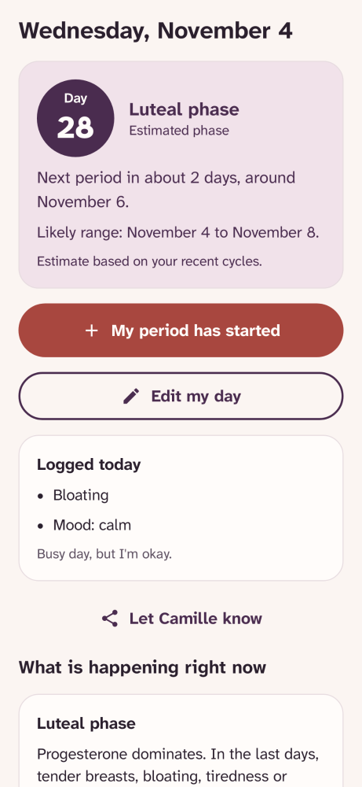
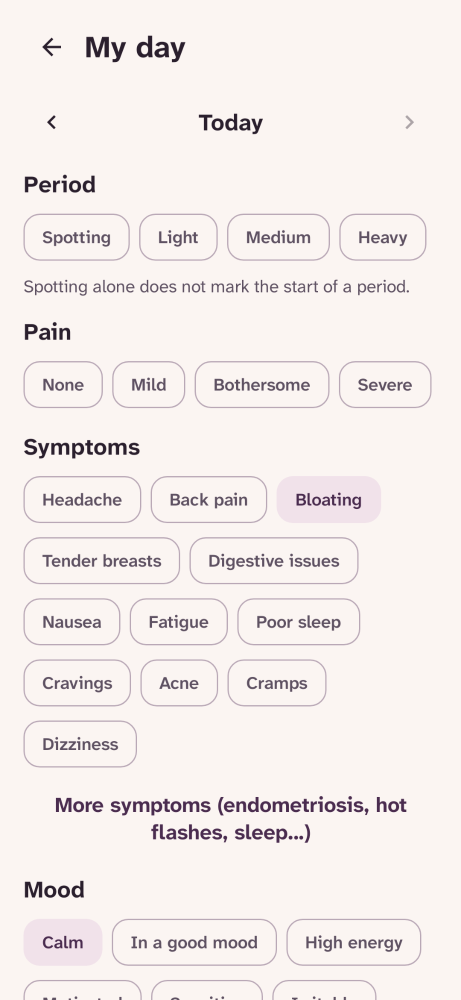
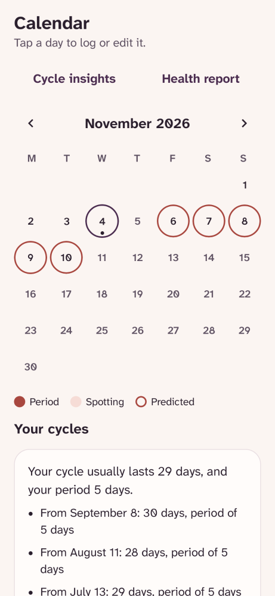
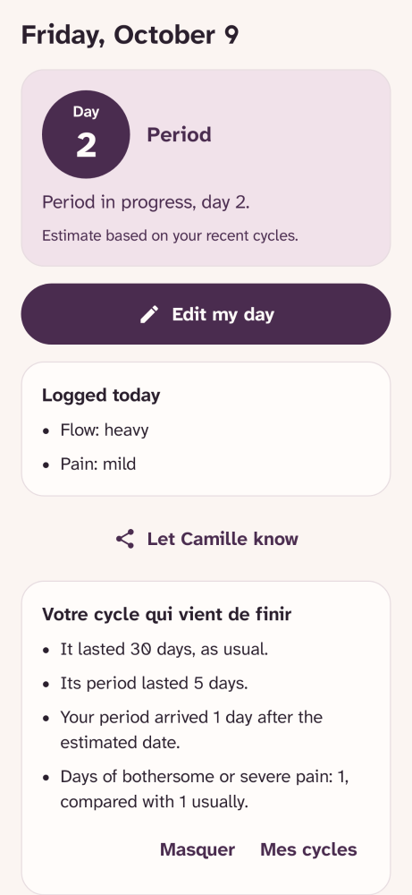
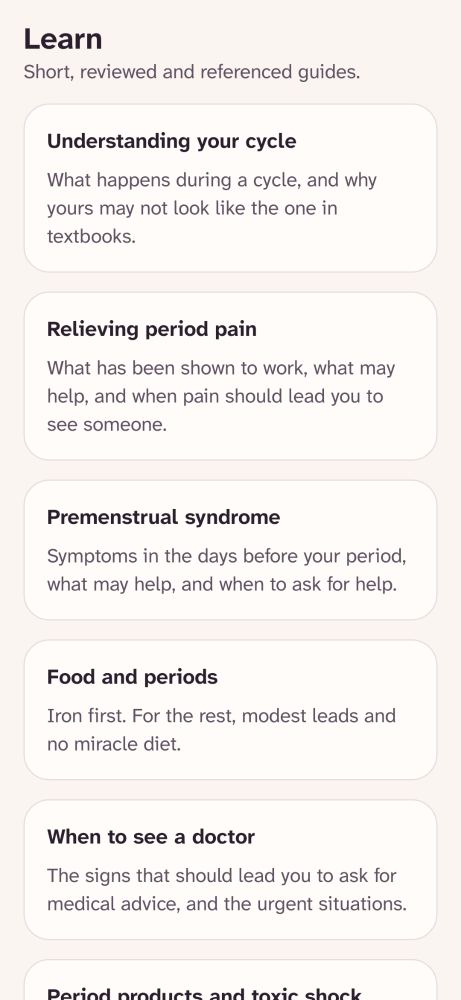
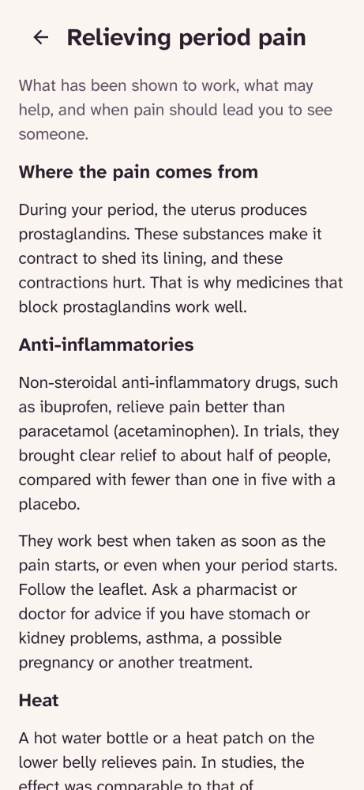
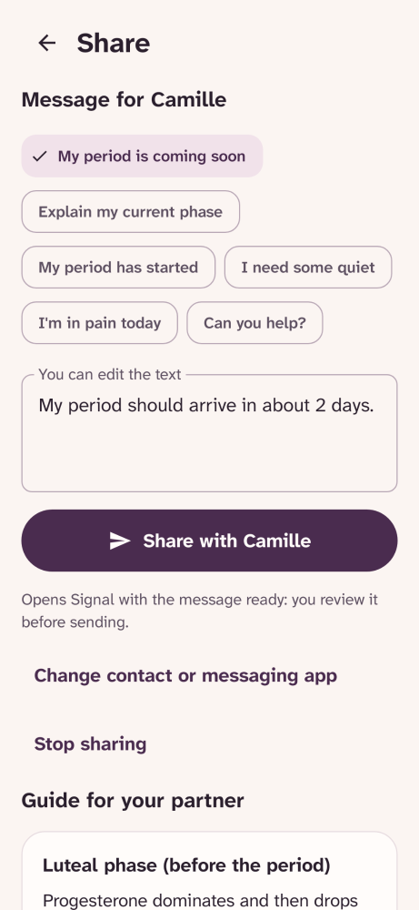
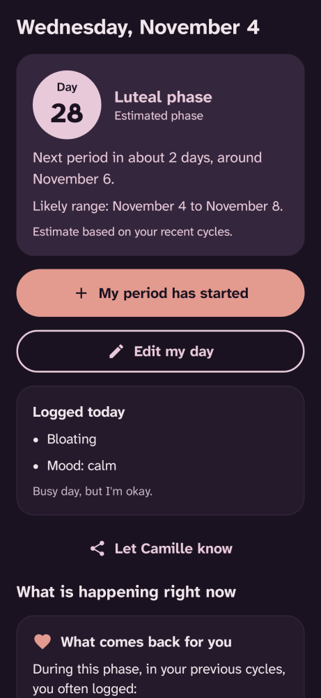

Your cycle, yours alone.
Lunaison tracks your periods, symptoms and mood, explains what is happening in each phase and estimates when your next period will arrive. Everything stays on your phone: the app does not even have Internet access.
- Free
- Open source (GPL-3.0)
- No account
- No ads or trackers
- No Internet access
Preview
What the app looks like

Home: where you are, and when your next period is coming. 
Log your day: flow, pain, symptoms, moods. 
The calendar: fill in any day with one tap, even afterwards. 
During your period: advice suited to the phase. 
Short guides, each with its studies. 
What really relieves pain, and when to see a doctor. 
Let your partner know, through your own messaging app. 
A dark theme, gentler in the evening.
Why
Some of the most intimate data there is
Lunaison grew out of my partner's need: to track her cycle more easily, and to let me support her day to day. Existing apps often keep their useful features behind a subscription. Lunaison is free, and will stay that way.
The most widely used cycle tracking apps store everything on their servers, and some have already shared this information with advertising or analytics services. Period dates, sex, a possible pregnancy: this is not data like any other.
Lunaison starts from the opposite principle: what you log never leaves your phone, unless you send it yourself. No account, no server, no ads. And because the code is public, anyone can check.
The other commitment is honesty: a forecast is always a range, every health tip links to a published study, and when the evidence is weak, the app says so.
What the app does
Everything useful, with no subscription
Log in a few seconds
Flow, pain, symptoms, mood, contraception or medication taken, optional ovulation signs (cervical mucus, basal temperature), and a personal note. Everything is optional, and a forgotten day can be filled in later from the calendar.
Honest forecasts
A likely range of dates based on your last six cycles, an optional estimated fertile window, a naturally irregular cycles mode (perimenopause, PCOS), and a pause mode (pregnancy, breastfeeding, continuous contraception).
Understand all four phases
What is happening in the body, a referenced daily tip, a soothing guided breathing exercise (4 s / 6 s), and personal patterns across all four phases.
Clinician health report
A complete one-page summary (FIGO/ACOG reference status, last 6 cycles, pain days, spotting outside periods) to show or share during a medical appointment.
Share by message or QR Code
Ready-to-send messages, concrete support tips for your partner, and serverless estimate sharing via in-app QR Code or Android share sheet.
Privacy, themes and widget
Four color palettes (light and dark), neutral lock-screen reminders, optional 4-digit PIN lock (hiding the recent-apps preview), and a discreet home screen widget.
Looking for…
Go straight to what matters
How are forecasts calculated?
The steps of the calculation, the diagrams and the thresholds for alerts.
What really relieves painful periods
The studies behind each tip, with their level of evidence.
Is it contraception? Where does my data go?
Short answers to the most common questions.
Install
For Android 8 and later
Lunaison is in testing. It will arrive on Google Play after testing; in the meantime, the signed APK is available on GitHub.
The GitHub version and the future Google Play version are not signed with the same key: to switch from one to the other, uninstall the first one beforehand (exporting your data from the settings if needed).